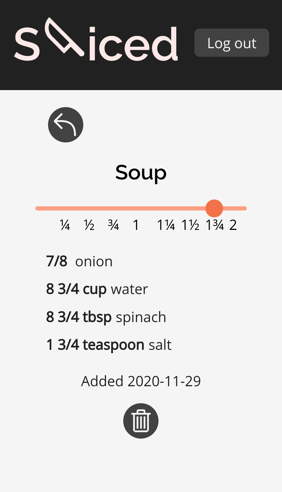

Sliced
An app that stores and scales recipes.
I made this app as my first capstone at Thinkful because I END OF SENTENCE
When a user creates a recipe on Sliced, the text is parsed to seperate the amounts and measurement units from the ingredient's name. This is displayed in the live preview at the bottom of the form.
When a user clicks on a recipe in the list, they can use the slider at the top of the screen to scale the recipe up and down between 1/4 and 2 by increments of 1/4.
Amounts divisible by 1/8 are converted into fractions, and other amounts are rounded to the third decimal place. Some units, including tablespoons and cups are converted into different units at appropriate breakpoints.
